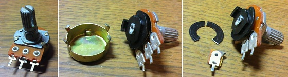

ポットをスイッチに改造
2012年10月03日 カテゴリー：実験等

要らなくなったポットをスイッチとして使ってみました。上写真のような簡単な改造です。
まず、ペンチ等でツメ部分を曲げてフタのようなものを取り外します。中の構造は簡単で、黒い抵抗の部分を金属の端子がこするように回転して抵抗値が変化するわけです（なんだか重要な部品のわりには頼りない感じもします）。
そして、抵抗帯をニッパー等で取り去ります。写真のように片方の端子も切り取ってしまったほうがよいと思います。切り取った側の端子は回転する金属の端子が引っかかってしまいスイッチとしての機能に不安があるためです。
フタのようなものを元に戻せば完成です。ポットを最小にした時だけ端子同士が接触しオンになるというスイッチの役割を果たします。まぁあまり信頼性があるスイッチとはいえませんが…
今回はポットをつける穴が余っていたベースにミュートスイッチ（キルスイッチ）をつけるという形で利用してみました。他にはハムバッキングピックアップのタップスイッチとしても大丈夫そうです。どうでもいい用途にはこのスイッチで充分だし、見た目が変わらないのがよいです。